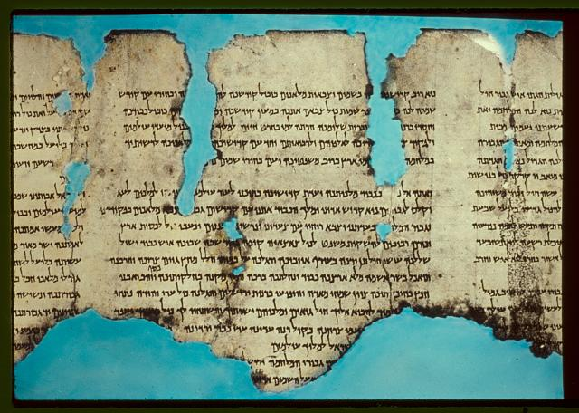

War Scroll (1QM)

- Find Name
- War Scroll (1QM)
- Description
- An eschatological rule for the final war between the Sons of Light (the tribes of Levi, Judah and Benjamin, the Yahad) and the Sons of Darkness (the army of Belial, including Edom, Moab, Ammon, Philistia and the Kittim), and one of the original seven scrolls from Qumran Cave 1, found in 1946–1947. It is well preserved, about 9 feet long in 18–19 columns, and lays out a forty-year framework of battles, trumpets, banners, divisions and priestly prayers, ending in a final-day battle decided by 'the great hand of God' (1QM 1:14–15).
- Historical Period
- Hellenistic–Roman
- Evidence Class
- Direct
- Interpretations
- The War Scroll reveals the sect's apocalyptic expectation: history ends in a literal-seeming holy war in which God himself wins the final battle. Whether the community expected a literal war, a symbolic apocalyptic conflict, or both is debated, and its enemy lists (including the Kittim, usually read as Romans) reflect its own time, not a timetable for the future. It must not be used as a prophetic calendar.
- Alternative Names
- Rule of War;War of the Sons of Light with the Sons of Darkness;Milhamah
- Related Books
- Scripture Illuminated
- Biblical Significance
- It is the fullest Second Temple picture of end-times holy war, and it forms the background for the New Testament's language of light versus darkness and final battle.
- Artifact Date
- 1st century AD (conception); copy late 1st century BC–1st century AD
- Current Location
- Shrine of the Book, Israel Museum, Jerusalem
- Date Discovered
- 1946–1947
- Discovery Location
- Qumran Cave 1
- Timeline Era
- Return and Second Temple
Awaiting Review Not yet checked against scholarly sources. Treat its claims as provisional until this entry is reviewed. About verification
Last reviewed: not yet reviewed